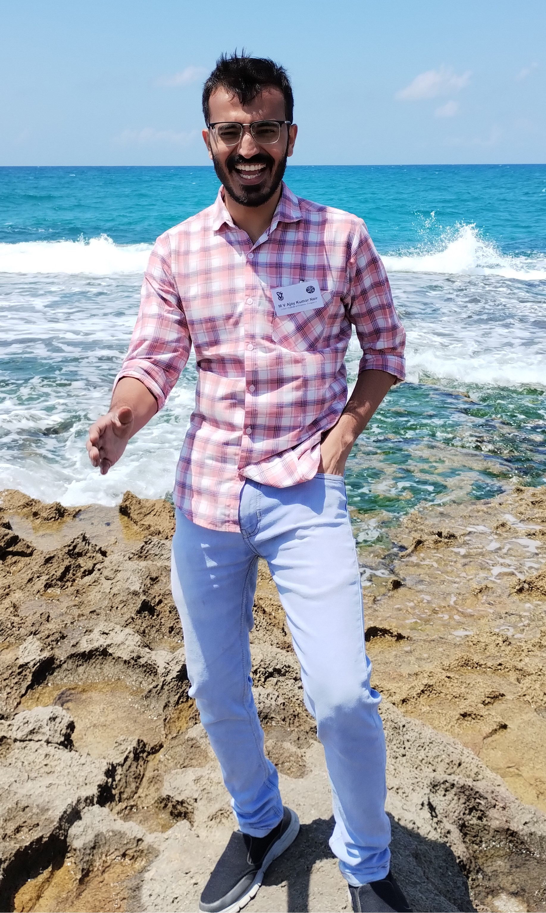

About Me

As a PhD student in Mathematics at the prestigious Indian Institute of Science (IISc) Bangalore, I am deeply immersed in the fascinating world of Low Dimensional Geometry. My academic journey is driven by a profound curiosity to understand the intricate structures and properties that arise in geometric spaces of lower dimensions. Under the mentorship of esteemed faculty, my research focuses on exploring the relationships between topology, geometry, and group theory, with a particular emphasis on three-dimensional manifolds. My academic pursuits have been shaped by a combination of rigorous coursework, collaborative research projects, and participation in international conferences and workshops. These experiences have not only broadened my understanding of the field but also allowed me to contribute original findings to the academic community. I am passionate about the interplay between theoretical mathematics and its potential applications in various scientific and engineering domains. Beyond my research, I am committed to fostering a vibrant academic environment through teaching and mentoring undergraduate students. I believe that inspiring the next generation of mathematicians is crucial for the continued advancement of the field. When I am not immersed in mathematical problems, I enjoy engaging in outdoor activities, reading scientific literature, and exploring the rich cultural heritage of Bangalore.